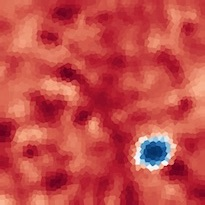
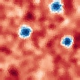
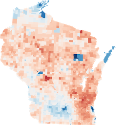
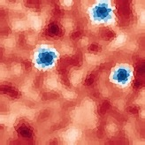
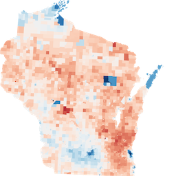

Antimander
Open source software to generate congressional districts and fight gerrymandering.
Overview
Each state is divided into districts that each elect a representative to congress. Here are Wisconsin's current districts.
The color represents what party that district is leaning towards.
In this plan, five of the eight districts are majority republican even though Wisconsin has roughly equal amounts of voters in each party.
Adjust the below sliders to see generated alternatives from Antimander.
See the current 2011 districts
Changing any one value has an effect on the others.
A better way to view these tradeoffs is something called a parallel coordinates plot. It presents the sliders vertically and draws one line across for each option according to its scores on the three metrics.
You can drag (brush) on an axis to filter values and see a range of maps.
This makes it easy to explore the tradeoffs. For example, you may select the top percentage of one metric to see how those solutions rank in other metrics.
You may also click on any district to enlarge it.
There is not a single best districting, each is optimal for a slightly different trade-off among the metrics.
Exploring the results allows us to build intuition about the tradeoffs.
North Carolina
North Carolina is another state with a history of gerrymandering. In 2016 the Supreme Court struck down the 2011 map as unconsitutional.
View 2011 DistrictsView 2016 DistrictsThe 2016 map is better across all metrics but still worse than most generated ones.
This is not a complete picture since there are additional metrics to consider (discussed below) but conveys how generated maps can highlight the weaknesses of others.
Optimizing for bias
In the follow plots we show what happens when we use Antimander to try to gerrymander maps to benefit one party over the other but to also remain compact. We create artificial states that have both cities and rural areas, where cities tend to be populated by one party, rural areas by the other, but overall there are equal voters of each party in the state.
Click one of the maps below to see what the districts optimized for partisan bias look like.
 
Some interesting patterns emerge, such as how with you can have compact and republican-biased but not compact and democrat-biased maps for some numbers of cities. This is a direct result of one party being forced into a small geographic area (cities).
We also see that gerrymandering for democrats involves splitting cities into many districts so that they may be narrowly won.
Goals
The goal of generative districting is not necessarily to design districts for use, but to demonstrate to a jury if and how a suspected partisan districting is significantly worse than all reasonable alternatives.
The other goal is to bring transparency to the districting process and help to build and understanding of the tradeoffs between different desired (but sometimes competing) considerations
Algorithms cannot make value judgements for us, such as balancing compactness vs competitiveness, but can provide an optimal set of options for us to evaluate.
The methods developed connect the problem of congressional districting to the fields of generative design, multi-objective evolutionary algorithms (MOEAs) and novelty search. An initial paper has been published in the academic conference GECCO 2020.
Below is a brief overview of gerrymandering, algorithmic evidence and the metrics that have been established for districting. Following that is a technical overview of the research methods developed.
Stay up to date
Get Involved
Background
Once a decade the United States takes a census of its population and accordingly redraws congressional districts to ensure that each state is fairly divided into equal populations. How the districts are drawn determines the distribution of elected representatives and has significant political impact, motivating political parties to exploit districting to their advantage, known as gerrymandering. Gerrymandering has become a challenge to democracy in large part because because it is challenging to define.
A cartoon of the infamous 1812 Massachusetts districting by its governor Elbridge Gerry that inspired the name 'Gerrymander' due to it resemblance to a mythical salamander.
Gerrymandering works by "packing" a small number of districts full of the opposing party’s voters to "waste" many votes, enabling other districts to "crack," i.e. to be won by a small (but comfortable) amount, thereby securing an outsize proportion of a state’s representatives for the gerrymandering party.

An example of packing and cracking from Steven Nass / Wikimedia
While a districting should intuitively be 'fair' to each party, often multiple other criteria are important, too, such as being 'regularly shaped' and having competitive elections (discussed below). Their relative importance is ultimately subjective. As a result, there is no one 'ideal map' and it is difficult to definitively show that a districting could be more fair. This has led to the Supreme Court ruling that while gerrymandering may be unjust, an impartial means to evaluate it is lacking. - Vieth v. Jubelirer (2004). In Rucho v. Common Cause (2019) the court returned to gerrymandering, ruling that partisan gerrymandering is not justiciable in federal court and litigation must shift to state courts.
Evaluating a districting by comparing it to a set of reasonable alternatives has recently become a theoretically attractive approach since it demonstrates that superior solutions are possible while taking into account natural biases of geography and voter distribution. However, generating a large set of satisfactory districts is a significant technical challenge because states may be composed of tens of thousands of geographic units and be optimized for many competing objectives.

Admitted Algorithmic evidence in Common Cause v. Lewis presented by Dr Chen showing how a proposed plan (red) is less compact than sampled generated plans which helped convince the court that the proposed plan was a biased outlier.
However, for a comparison to be meaningful it must be against a optimal as well as diverse set of solutions:
"if these 1,000 plans are chosen in such a way that they are highly similar, then having 1,000 plans is only marginally better than having a single comparison plan. The maps should be unique from one another, each contributing new information, so that we are able to gain some understanding of what is possible in map-making for a particular jurisdiction."
- Toward a Talismanic Redistricting [8]
Previous approaches apply Monte Carlo methods [1], single-objective evolutionary algorithms [5], and non-evolutionary two-objective methods [7] to generate districtings.
Metrics
The results above were optimized for "fairness", "compactness" and "competitiveness." But what are those and what do they mean and what makes a 'good' district?
1. Compactness
The original gerrymander was named for its peculiar shape and it is intuitively desirable to expect to live near people within the same district. A lot of attention is therefore paid to the shape of districts, especially since - unlike other metrics - it is easy to evaluate visually. But what does it mean for a shape to be 'compact'? It turns out there are many metrics that can be used. Images below are from this article which also has additional metrics.


{kind=link}
- Polspy-Popper: The ratio of the shape's area to its perimeter (used above).
- Convex-Hull: The ratio of smallest convex shape that can fit around a shape to its perimeter.
- Bounding-Circle (Reock): Ratio of the area to that of the minimum circle that can fit around it. Also knows as "Reock."
- Center-Distance: The average distance to the center of a shape from the points within that shape.
2. Fairness
Generally we want the percent of elected representatives from each party to correspond to the percent of voters in the state for that party. The Efficiency-Gap [6] is a metric that views fairness through the lens of the lost votes of each party. Votes cast for the losing party, or those cast for the winning party beyond the threshold needed to win are considered lost.
There is another metric called Partisan Symmetry based on the Seats-Votes curve, which plots how number of representatives varies with percent of the vote for each party. This article has excellent explanations with interactive charts of previous years' districts.
Seats-Votes Curve. The area between the curves is called the Partisan Symmetry score and measures how similar the curves are for each party.
3. Competitiveness
Close races help prevent incumbents from becoming too entrenched (incumbent gerrymandering). Also, less polarized representatives are beneficial for a healthy democracy. For these reasons, it is important to have competitive districts. Competitiveness is measured by the largest ratio by which one party wins over another.
4. Minority Representation
While partisan gerrymandering is not illegal, racial gerrymandering is illegal under the Voting Rights Act. There should be enough "majority-minority" districts where a majority of inhabitants are from a minority group. However, defining racial gerrymandering is also complicated and North Carolina is one example of where preventing one kind of gerrymandering came directly at the expense of another.
5. Preserving Communities
Another desired redistricting criteria is to not divide "communities". While there are some guidelines for how to do so it is exceptionally hard to codify explicitly. One recent approach is to use crowd sourcing.
As you can see above, there are many many things we want in districts and and improving one metric may sometimes require harming another.
Generative algorithms can also be used here to help explore the space of tradeoffs.
On the left are districts optimized for all of the compactness metrics above. In addition, districts were required to be contiguous and have nearly-equal populations.
We can see which metrics correlate with each other and which do not, or what it means to be compact in one regard but not the other.
The dark reds and blues mean these districts are not competitive, which is not surprising since that was not something optimized for.
Metrics like Polsby-Popper that are based on surface area conflict more with metrics (i.e. more lines cross) that are based on general shape (like center dist).
Which metrics (or pairs of) best correspond to your idea of 'compactness?'
Methods
Optimization is typically a process aimed towards achieving a particular goal; however, many real world problems are complex with multiple competing goals. Some domains handle this by creating a weighted average 'composite' goal. This requires picking a precise and often arbitrary weighting a priori. Consider choosing an airplane flight, usually some balance of speed and affordability is desired but that tradeoff is subjective and it's hard to weight them before seeing the options. Multi-objective optimization is the process of finding the optimal set of solutions across all possible tradeoffs among objectives.
Left: Minimizing the error rate of a single-objective over time.
Right: In multi-objective optimization there is a "pareto-front" or n-dimensional surface of solutions where every solution in the front has no other solution that is better in every regard (dominates). These are called "pareto-optimal."
Problem Definition
The districting problem is the partitioning of an undirected connected graph into a fixed number of districts. Each node in the graph represents the geographic unit of a state that composes a district, and contains a number of voters registered for each political party. The partitioning of the state has two constraints: the total population of each district must be approximately equal and each district must be contiguous.
Process
The Non-Dominated-Sorting-Genetic-Algorithm (NSGA-II) [2] is used here, which is an evolutionary multi-objective algorithm (MOEA). To improve upon NSGA-II (which when applied naively failed to generate any feasible solutions), we explore a series of extensions: multi-phase optimization, novelty search (NS), and feasible-infeasible (FIF) search. Crossover is not employed. Two additional modifications were required to achieve good results. First, the compactness metrics were modified to be the sum of each districts compactness squared rather than the arithmetic mean as used in other papers. Otherwise districtings would get a good overall score but have one of the many districts being totally unusable. Second, constraints were placed on the worst case compactness metrics.

Overview of the NSGA-II process.
Representation & Seeding
Districts are represented as integer arrays, where each node is assigned to a district. Initial individuals are created by taking random seed nodes and iteratively adding adjacent random unassigned nodes until there are no unassigned nodes left. A hill-climbing repair operator mutates the random districts until they meet the equality threshold constraint.
Mutation Operator
The mutation operator simply takes a node bordering another district and swaps the district it belongs to. To make exploring the search space practical, the mutation operator only allows mutations that preserve the contiguity of the district. Calculating graph connectedness after every mutation would be computationally prohibitive and so a local adjacency graph is created for each node for fast checks.
Mutation process: A node (orange outline) is random selected to swap districts. The circles are the immediate adjacency graph, a simple DFS is done on nodes in the same district (black-circles). Here we see that removing the orange node would break the district and is therefore prohibited. A full graph traversal is not needed because of assumptions about the structure of districts (such that one district will never fully enclosed another district) that are preserved by the objectives.
Novelty Search
Novelty search explicitly promotes diversity, thereby assisting exploration in search [3]. Novelty Search requires a behavior characterization that captures important traits in few dimensions. This quantification of behavior is used to measure what is novel, which defines the kind of diversity that novelty search will seek to encourage. Multiple characterization descriptors were proposed and tested.
Method #1: Tile-Histograms. A histogram of the distances between nodes within the same district. Inspired by shape features used to characterize 3D meshes [10] for object databases in ways invariant to scale and rotation. It was used as a novelty metric for Evolving Alien Corals.
Method #2: Sorted-Centers. The Simplest method whereby the centroid of each district is sorted by 'x+y' and concatenated.
Method #3: Mutual-Tiles. Pairs of tiles are selected at the start of each run (dashed lines). Then, a binary array is constructed such that Vi is 1 if the ith pair is in the same district and 0 otherwise. The k top principal components of this binary array are the features. It captures the most information at the expense of the most meta-parameters.
Feasible-Infeasible Search
The double constraints of contiguity and equality propose a challenge for the optimization process since the mast majority of the possibilities are inviable. Often, finding a good solution requires exploring some bad ones first. Some genetic algorithms simply throw out invalid solutions while others keep them in the same population but with a penalty to their fitness. A more elegant solution is to keep two populations of solutions, one for feasible individuals (those that satisfy all constraints) and one for infeasible (FIF). The feasible population optimizes for all the objectives while the infeasible one optimizes to satisfy the objectives. [4, 11] propose combining novelty search with FIF.
Re-creation of figure 1-C in Liapis et all [11] showing the total solution space with disjoint spaces of feasible solutions. Infeasible solutions (orange) also have a pressure to explore, making them more likely to discover novel solutions.
Multi-Phase Search
Because optimizing a large number of nodes directly is challenging, districts are optimized through a multi-phase evolutionary algorithm, where each successive phase divides districts more granularly (similarly to Swarmy et al. [7]). To create a series of coarsening graphs, the graph is iteratively contracted using star contraction [12] until the state has reached 500 nodes. An additional bias is added to preserve compact shapes across graph resolutions.
Multiple graph contractions with compactness bias.
Data
Wisconsin is chosen as a test as in [5,7]. Census and geographic data was downloaded from the Metric Geometry and Gerrymandering Group's mggg-states Github repository. Voters for each party were the average voters in the 2012 and 2016 presidential election. Wisconsin has eight congressional districts composed from 6634 census wards.
Results
Three novelty methods were compared using NSGA-II as well as with and without feasible-infeasible search (FIF). Novelty was added as an additional objective. Each run had a total population of 700, and consisted of 15000 generations across five phases. Each run was replicated five times.
All three novelty metrics outperformed the baseline with 'Centers' metric doing the best. Hypervolume is a measure of how well the search finds districtings that cover all possible tradeoffs. Surprisingly, novelty search without FIF did the worst, and seemed to struggle with the complexity of later phases. This validates that novelty search combined with Feas-Infeas is an effective combination.

Comparing actual and optimized Wisconsin districts. Shown optimized solutions are hand-chosen from those that dominate the actual districting (i.e. strictly lower score on all measures) (a) Wisconsin's 2011 districts have scores: fairness=0.788, competitiveness=%53.16, equality=%8.46. (b) An optimized compact district from a FIF-NOV run: fairness=0.647, competitiveness=%17.98, equality=%0.76. The solution is quantitatively and qualitatively more compact than the actual districting. (c) An optimized district with maximum fairness and competitiveness from a FIF-NOV run: fairness=0.762, competitiveness=%13.12, equality=%0.0 Remarkably this districting had exactly 726419 lost votes for each party.
For a final analysis the diversity of generated solutions was evaluated. As discussed previously, a comparison of a potentially gerrymandered districting to other options that are potentially better than it on all desired properties is most meaningful when done against a diverse set of alternatives. The 'Centers' metric is used as the basis of exploring diversity since it created the most optimal solutions. Multiple runs of four different methods were combined and the features of final solutions were projected into 2D with PCA.
The clusters of solutions from four methods. The "Baseline" (regular NSGA-II) has four general clusters of solutions, the least of any. Congruent with expectations, the pure novelty search (top-right) has the most diversity. FIF with and without novelty seem to have comparable diversity, although the clusters in plain-FIF overlap highly with the baseline.
Conclusion & Next Steps
How should compactness be prioritized over competitiveness? Or partisan gerrymandering vs racial gerrymandering? Algorithms cannot make these tough tradeoffs for us. However, they can empower us by bringing transparency to the tradeoffs and providing optimal sets of options. There is also promise that having optimal options will expose gerrymandered districts as statistical outliers.
Antimander is an open-source high-performance optimization library and interactive browser with the goal of achieving this dream and making districting more transparent and fair. It has presented and validated novel methods to achieve high quality districts; however, to be ultimately successful it needs more work and must incorporate further measures, including majority-minority districts, preserving areas of interest, and other metrics that vary in importance by state. To do this requires growing into a larger open source community that brings together a diverse group of researchers, mathematicians, statisticians, designers and policy experts. If this is something you are interested in being part of or supporting please reach out.
Stay up to date
Get Involved
References
- Metric Geometry and Gerrymandering Group. 2013. Gerrychain. https://github. com/mggg/GerryChain. (2013).
- K. Deb, A. Pratap, S. Agarwal and T. Meyarivan, "A fast and elitist multiobjective genetic algorithm: NSGA-II," in IEEE Transactions on Evolutionary Computation, vol. 6, no. 2, pp. 182-197, April 2002.
- Joel Lehman and Kenneth O Stanley. 2008. Exploiting open-endedness to solve problems through the search for novelty. In ALIFE. 329–336.
- Antonios Liapis, Georgios N Yannakakis, and Julian Togelius. 2015. Constrained novelty search: A study on game content generation. Evolutionary computation 23, 1 (2015), 101–129.
- Yan Y Liu, Wendy K Tam Cho, and Shaowen Wang. 2016. PEAR: a massively parallel evolutionary computation approach for political redistricting optimization and analysis. Swarm and Evolutionary Computation 30 (2016), 78–92.
- Nicholas O Stephanopoulos and Eric M McGhee. 2015. Partisan gerrymandering and the effciency gap. U. Chi. L. Rev. 82 (2015), 831.
- Rahul Swamy, Douglas King, and Sheldon Jacobson. [n. d.]. Multi-Objective Optimization for Political Districting: A Scalable Multilevel Approach. ([n. d.]).
- Wendy K Tam Cho and Yan Y Liu. 2016. Toward a talismanic redistricting tool: A computational method for identifying extreme redistricting plans. Election Law Journal 15, 4 (2016), 351–366.
- Schutzman, Zachary. "Trade-Offs in Fair Redistricting." Proceedings of the AAAI/ACM Conference on AI, Ethics, and Society. 2020.
- Osada, Robert, et al. "Shape distributions." ACM Transactions on Graphics (TOG) 21.4 (2002): 807-832.
- Liapis, Antonios, Georgios N. Yannakakis, and Julian Togelius. "Enhancements to constrained novelty search: Two-population novelty search for generating game content." Proceedings of the 15th annual conference on Genetic and evolutionary computation. 2013.
- Umut A. Acar and Guy E. Blelloch, Algorithms: Parallel and Sequential, Chapter 13.